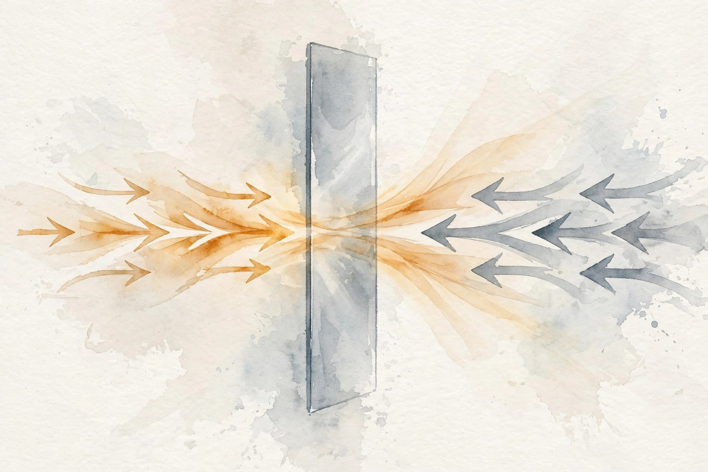
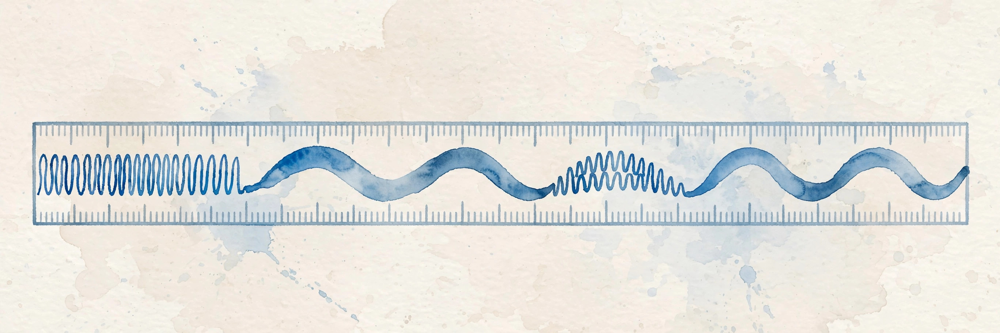

Companion 5 of 15 · narrated from the lesson document
Position 3 reads position 1 directly, no squeezing through lossy steps. This companion walks the full arc of Unit 05: query, key, and value as a retrieval system, the calibration scale, multiple heads, masks, residuals, positions, the feedforward block, cost, and the KV cache.
From the lesson The idea, and every number beside it, comes from the cited section of lessons/u05_attention_transformer.md. The phrasing is the companion’s.
Illustration Invented by the companion: an analogy, a toy with made-up values, or a what-if. Never lecture content.
companion Companion voice: the idea above the tag is from the lesson. The generalization below it is the companion’s.
Provenance: no full lecture transcript exists for this session. The 2026 lecture videos are restricted and unviewed, and the 2024 playlist was not viewed. This page narrates the lesson document, not a video. The concept inventory is REQUESTED-BRANCH. The reading list is OFFICIAL-SOURCE via SRC-02.
From the lessonC01 §2, §3
Position 3 needs information from position 1. The RNN would squeeze it through 2 lossy steps (U04 C04). Can position 3 read position 1 directly? The query asks “who is parallel to me”, the keys answer, and the values carry the content. A retrieval system. The query is the question, the keys are the index, the values are the documents. Attention scores match the question against the index, and the weights fetch a blend of the documents. Three learned projections let the model use different geometry for asking, indexing, and carrying.
From the lessonC01 §5, §6
S_ij = q_i · k_j: every position scores every position, O(n² d_k). P = softmax(S / sqrt(d_k)). Out_i = sum_j P_ij v_j: a convex combination of values. No recurrence, no convolution. The only mixing is the weighted sum. From compute_u05.py: q = (1,0), K rows (1,0), (0,1), (−1,0), V rows (2,0), (0,2), (−2,0). Scores (0.707, 0, −0.707). Weights (0.576, 0.284, 0.140). Output (0.872, 0.568) = 0.576 v1 + 0.284 v2 + 0.140 v3.
compute_u05.py (executed 2026-10-06): (0.576, 0.284, 0.140) over the three keys. The blend (0.872, 0.568) leans on the parallel key.Illustration Blend toy. The retrieval arithmetic is C01’s. The vectors start at the lesson’s toy and are yours to change.
query q
keys (bar separated)
values (bar separated)
From the lessonC02 §2, §3
d_k = 64, q and k have unit-variance entries. What do the raw dot products look like? Dot variance = d_k = 64, std = 8. Softmax of values spread over ±16 collapses to one-hot. The head stops blending and stops learning: softmax saturates, gradients vanish. The scale is a calibration knob. Raw dots grow with d_k. Dividing by sqrt(d_k) restores unit variance, so the softmax stays in its sensitive range. Without it, big models (big d_k) get peaked attention and dead gradients for free.
From the lessonC02 §5, §6
Var of the sum = d_k under independence. Softmax saturates when inputs differ by more than about 5: with std 8, one key wins by luck of the draw. Dividing by 8 brings the spread back to about 1, where softmax discriminates instead of collapsing. From compute_u05.py, d_k = 64, 8 keys: unscaled, max weight 0.866, entropy 0.571 (near one-hot). Scaled by 1/8: max weight 0.218, entropy 1.974 (spread out).
compute_u05.py (executed 2026-10-06): unscaled entropy 0.571 (near one-hot, max weight 0.866), scaled entropy 1.974 (spread, max weight 0.218). The division restores the sensitive range.Illustration Scale probe. The variance argument is C02’s. Slide d_k and watch the raw spread grow.
d_k
From the lessonC03 §2, §3
One head gives one blend. What if position 3 needs “subject” from position 1 and “tense” from position 2 at once? h = 4 heads, d = 32, d_k = 8. Each head learns its own QKV geometry, the outputs concat and re-project. A panel of specialists, not one generalist. Each head attends in its own subspace (syntax, coreference, position). The output projection mixes the specialists’ reports. One head with d_k = 32 is not the same: the split forces separate score matrices.
From the lessonC03 §5, §6
Head_i = attention(X W_qi, X W_ki, X W_vi). MHA = concat(heads) W_o. Parameters: 4 d² (Q, K, V, O projections). Compute: h times the single-head cost, same total FLOPs as one big head, but h independent (n, n) score matrices. Shape trace from compute_u05.py, n = 8, d = 32, h = 4: per-head scores (8, 8), per-head out (8, 8), concat (8, 32), W_o (32, 32).
From the lessonC03 §11
The broken assumption is that heads specialize cleanly. Trained heads often redundantly attend to the same positions, and some heads can be pruned with no loss. Specialization is a tendency, not a guarantee. Do not assign linguistic roles to heads without probing.
From the lessonC04 §2, §3
The decoder predicts w_4 from w_1..w_3, but the full (n, n) score matrix lets position 3 see position 5. How is the future hidden? Add −1e9 above the diagonal, then softmax. The upper triangle becomes exactly 0. A one-way mirror. The causal mask blinds each position to the future, the padding mask blinds all positions to filler. Both are added to the scores before softmax: −inf becomes 0 weight. After softmax is too late: the mass already moved, and renormalizing leaks rank information.

From the lessonC04 §5, §6
softmax(z_i − 1e9) = 0 up to float precision: exp(−1e9) underflows to 0. The row renormalizes over allowed positions only. From compute_u05.py, 4×4 random scores: row sums (1, 1, 1, 1), upper-triangle max 0.0. Row 1: (1.00, 0, 0, 0). Row 3: (0.50, 0.18, 0.32, 0). Masking after softmax (zeroing weights then renormalizing) gives different numbers: the disallowed scores shaped the distribution before they were cut.
compute_u05.py (executed 2026-10-06): (0.50, 0.18, 0.32, 0). The future is exactly 0, the row sums to 1, and the mass moved only among allowed positions.Illustration Mask timing toy. The mechanism is C04’s. Three scores at position 3 (sees 1, 2, 3 only). The prefilled scores reproduce the lesson’s row exactly.
Scores (position 1, 2, 3)
From the lessonC05 §2, §3
Twelve attention layers, each a learned function. What stops the gradient from dying across them (U04 C06 all over again)? y = x + F(x). The gradient dy/dx = I + dF/dx: the identity path carries signal even if F’s gradient vanishes. The block learns a correction, not a replacement. Residuals are express lanes. Each sublayer adds its contribution to the running representation, and the gradient flows back along the skip untouched. Layer norm is the stabilizer: it re-centers each vector (mean 0, var 1) so the scale never drifts across layers.
From the lessonC05 §5, §6
dL/dx = dL/dy (I + dF/dx): the identity term guarantees a full-strength path. Layer norm: (x − mu)/sigma × gamma + beta. Differentiable, per token, no batch statistics (unlike batch norm, which breaks on variable sequences). From compute_u05.py: x = (1,2,3,4,5), normalized mean ~0, var 1.0.
From the lessonC05 §11
The broken assumption is that norm placement is cosmetic. Deep post-norm stacks need learning-rate warmup to train at all: the gradient through 24 post-norm layers without warmup explodes or stalls. Placement is a stability decision. Choose pre-norm for deep stacks, post-norm only to match a legacy checkpoint.
From the lessonC06 §2, §3
Attention is a set operation: permute the input, permute the output identically. Where did word order go? “Dog bites man” versus “man bites dog” have the same multiset. Without positions, the model cannot tell them apart. Add a position vector to each token embedding (or bias the scores, as in relative schemes). The model then has both “what” and “where”. Sinusoids give a fixed ruler, learned encodings give a fitted ruler. Both break at unseen lengths.

From the lessonC06 §5, §6
Sinusoid: each dimension is a wave with a different frequency, and PE(pos + k) is a linear function of PE(pos) (rotation), so relative offsets are learnable. Learned: row pos of a table, no extrapolation past n_max. From compute_u05.py, d = 4: PE(0) = (0, 1, 0, 1). PE(1) = (0.841, 0.540, 0.010, 1.000). The fast wave (freq 1) moved a lot, the slow wave (freq 0.01) barely moved. That is the ruler working.
compute_u05.py (executed 2026-10-06): (0.841, 0.540, 0.010, 1.000). PE(0) = (0, 1, 0, 1). The fast dimension moved, the slow one barely did.Illustration Ruler toy. The sinusoid formula is C06’s: PE(pos, 2i) = sin(pos / 10000^(2i/d)), PE(pos, 2i+1) = cos(pos / 10000^(2i/d)). At d = 4, pos = 1, it reproduces the lesson’s PE(1) exactly.
Position
From the lessonC07 §2, §3
Attention only mixes positions. Where does per-position computation happen? The FFN applies to each of the n vectors independently: (n, d) → (n, 4d) → (n, d). Same weights at every position. Attention is the meeting. The FFN is the desk work after. Each position processes its own vector through a two-layer MLP: expand, activate, contract. The 4x expansion is the capacity knob. Most of the model’s parameters live here.
From the lessonC07 §5, §6
Per-position means no cross-talk, so it parallelizes trivially over n. The expansion gives the MLP room for features, and the contraction returns to the residual width d so the add typechecks (C05). Shape trace, hand-done and labeled as such: d = 32, n = 8. In (8, 32) → hidden (8, 128) → out (8, 32). Parameters: 32×128 + 128 + 128×32 + 32 = 8320.
From the lessonC07 §11
The broken assumption is that the FFN is just a nonlinearity. Remove it and keep attention: the model loses most of its capacity (2/3 of params) and per-position depth. Ablations show the drop. It is half the block, not a garnish.
From the lessonC08 §2, §3
One block design, three jobs: classify, generate, translate. What changes? Encoder (BERT-style): no causal mask, read the label off [CLS]. Decoder (GPT-style): causal mask, predict next. Encoder-decoder: encoder reads the source (no mask), decoder writes with cross-attention to the encoder. Three floor plans from one brick. Encoder-only: bidirectional, for understanding (classify, extract). Decoder-only: causal, for generation (the modern default). Encoder-decoder: two stacks joined by cross-attention, for conditioned generation (translation, summarization).
From the lessonC08 §5, §6
No new math: the distinction is which masks and which K/V sources. Cross-attention shape trace, hand-done and labeled as such: n_dec = 6, n_enc = 10, d = 32. Scores (6, 10), weights (6, 10) with rows summing to 1, out (6, 32).
From the lessonC08 §11
The broken assumption is that decoder-only can do everything encoder-decoder can. With a 10k-token source and a short target, the decoder-only model re-reads the source every layer at full n² cost, while encoder-decoder reads it once. The floor plan has a price.
From the lessonC09 §2, §3
The loss is nan and the shapes all “look right”. Where is the bug? A transformer layer is a pipeline of typed transforms, and a mismatch is a compile error you have to write yourself. The discipline: assert every intermediate. The assert that fires names the bug. Shapes are types.
From the lessonC09 §6
The trace, from compute_u05.py’s MHA section and hand-extended through the FFN (labeled where hand-extended): per-head scores (8, 8), per-head out (8, 8), concat (8, 32), W_o (32, 32), FFN hidden (8, 128), FFN out (8, 32). The lab implements the trace as asserts.
From the lessonC09 §11
The broken assumption is that the shapes matched, so the code is right. Transposed scores (n, n) still typecheck (square): the mask lands on the wrong axis. Shapes are necessary, not sufficient. Pair them with the value checks in C01 to C04.
From the lessonC10 §2, §3
Training is fast (parallel over n) but inference crawls (serial over n). Why both? Per layer: attention O(n² d), FFN O(n d²). Training does all n positions at once. Inference generates one token at a time, re-reading the context. Two different bills. The transformer trains like a parallel machine and generates like an RNN.
From the lessonC10 §5, §6
Projections: 4 matmuls of (n, d) @ (d, d): 4 n d². Scores: (n, d)(d, n) per head: n² d total. Blend: same. FFN: 16 n d². At large n the n² term dominates, at small n the FFN does. Toy, hand-done and labeled as such: n = 512, d = 1024, one layer. Attention: 2 × 512² × 1024 = 0.54 GFLOP. FFN: 16 × 512 × 1024² = 8.59 GFLOP. Projections: 4 × 512 × 1024² = 2.15 GFLOP. Total about 11.3 GFLOP per layer forward. The FFN dominates at this n. The n² term takes over past n ~ 8d.
Illustration Bill calculator. The FLOP formulas are C10’s. The sizes are yours. Prefilled with the lesson’s toy.
n (sequence length)
d (model width)
From the lessonC11 §2, §3
Generating token 17 recomputes keys and values for tokens 1..16, and they did not change. A memo pad. The past’s keys and values are frozen (causal: they never change), so store them once and attend against the pad. Each new token appends one row. The pad grows with the conversation: memory for speed. Without cache, step t costs O(t² d), total over n steps O(n³ d). With cache, step t costs O(t d), total O(n² d). The saving is a full factor of n in the total.
From the lessonC11 §6
From compute_u05.py, n = 16, d = 8, per head per layer: no cache 23936, cached 2176, ratio 11.0x. The ratio grows with n (about 2n/3 here, linear in n).
compute_u05.py (executed 2026-10-06): 23936 without cache versus 2176 with cache, an 11.0x ratio that grows with n.From the lessonC12 §2, §3
Can you write the layer without looking? n = 4, d = 16, h = 2. Embeddings + sinusoid in, pre-norm MHA + residual, pre-norm FFN + residual, out. Every shape asserted (C09). The layer as a recipe: normalize, attend, add, normalize, transform, add. Six lines of numpy with asserts between them. If you can write it cold, you own the architecture. If not, the gaps point back to the concept that needs work.
From the lessonC12 §6
The lab runs it: output shape (4, 16), finite values, and the check that matters: permuting the input without PE permutes the output, with PE it does not. That check is the whole unit in one experiment.
From the lessonC12 §11
The broken assumption is “I understand it because I read it.” The transpose trap (C09) is the counterexample: readers miss it, writers catch it. Writing is the test.
Every lesson on this page, in order. Tap one to return to its chapter.